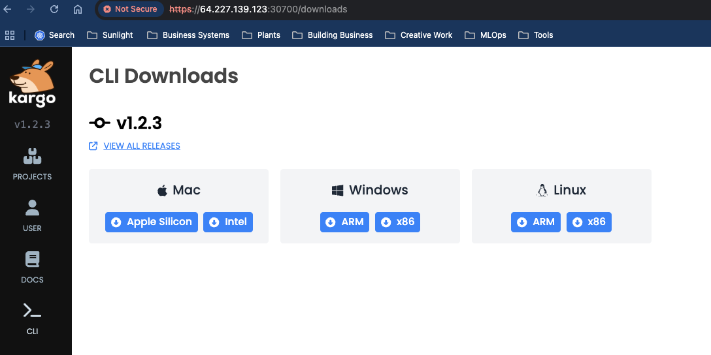
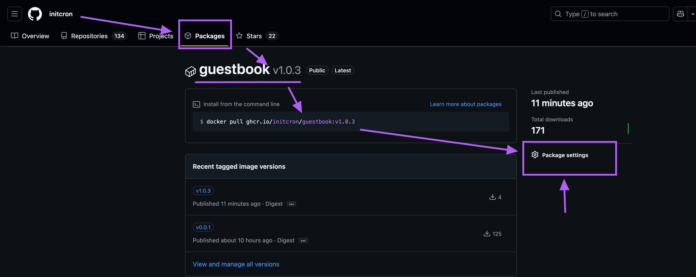
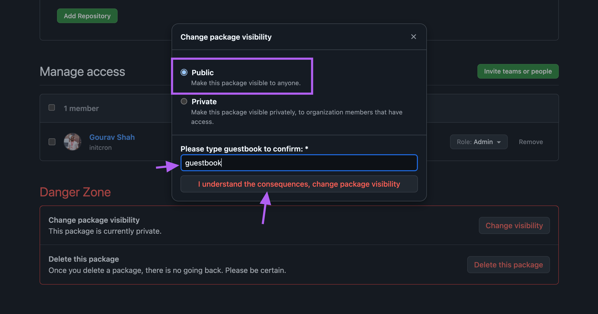
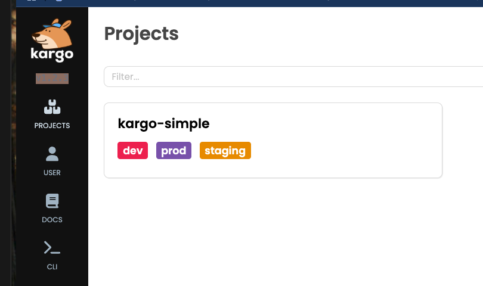
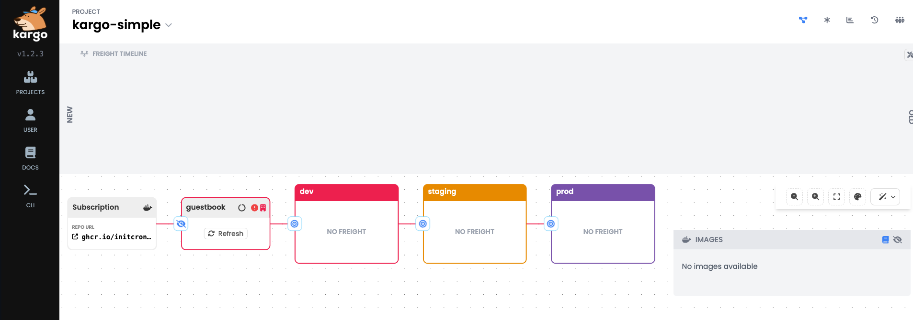
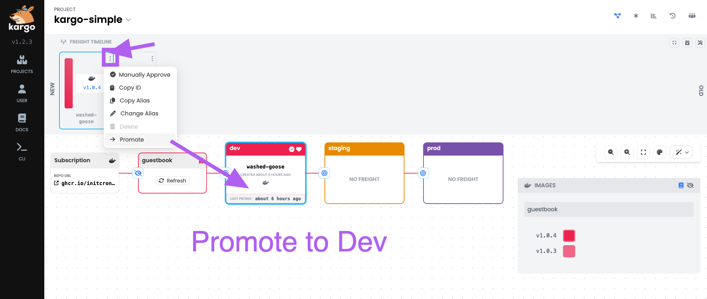

Setup Promotion Pipeline with Kargo
Install Cert Manager
helm repo add jetstack https://charts.jetstack.io
helm repo update
helm install cert-manager jetstack/cert-manager --namespace cert-manager --create-namespace --set installCRDs=true
validate :
kubectl get all -n cert-manager
Install kargo
pass=$(openssl rand -base64 48 | tr -d "=+/" | head -c 32)
echo "Password: $pass"
hashed_pass=$(htpasswd -bnBC 10 "" $pass | tr -d ':\n')
signing_key=$(openssl rand -base64 48 | tr -d "=+/" | head -c 32)
Note: Remember to save the password which is echoed after echo "Password: $pass" step. You will need it later to login to kargo UI.
If you do not have htpasswd installed, install it as
On linux :
apt-get install apache2-utils
on macOS:
brew install httpd-tools
On windows:
choco install apache-utils
Once you generate the hashed_pass and signing_key, you could use them to install kargo using helm as,
helm upgrade --install kargo oci://ghcr.io/akuity/kargo-charts/kargo \
--namespace kargo \
--create-namespace \
--set api.adminAccount.passwordHash=$hashed_pass \
--set api.adminAccount.tokenSigningKey=$signing_key \
--set api.service.type=NodePort \
--set api.service.nodePort=30700 \
--wait
[sample output]
Release "kargo" has been upgraded. Happy Helming!
NAME: kargo
LAST DEPLOYED: Tue Feb 25 15:25:20 2025
NAMESPACE: kargo
STATUS: deployed
REVISION: 2
TEST SUITE: None
NOTES:
.----------------------------------------------------------------------------------.
| _ _ _ _ _ |
| | | ____ _ _ __ __ _ ___ | |__ _ _ __ _| | ___ _(_) |_ _ _ |
| | |/ / _` | '__/ _` |/ _ \ | '_ \| | | | / _` | |/ / | | | | __| | | | |
| | < (_| | | | (_| | (_) | | |_) | |_| | | (_| | <| |_| | | |_| |_| | |
| |_|\_\__,_|_| \__, |\___/ |_.__/ \__, | \__,_|_|\_\\__,_|_|\__|\__, | |
| |___/ |___/ |___/ |
'----------------------------------------------------------------------------------'
Ready to get started?
⚙️ You've configured Kargo's API server with a Service of type NodePort.
The Kargo API server is reachable on port 30700 of any reachable node in
your Kubernetes cluster.
If a node in a local cluster were addressable as localhost, the Kargo API
server would be reachable at:
https://localhost:30700
🖥️ To access Kargo's web-based UI, navigate to the address above.
⚠️ Your API server is using a self-signed certificate and you should expect a
warning from your browser. You may safely disregard this.
⬇️ The latest version of the Kargo CLI can be downloaded from:
https://github.com/akuity/kargo/releases/latest
🛠️ To log in using the Kargo CLI:
kargo login https://localhost:30700 --admin --insecure-skip-tls-verify
📚 Kargo documentation can be found at:
https://docs.kargo.io
🙂 Happy promoting!
validate :
kubectl get all -n kargo
You should also be able to access the Kargo UI at https://NODEIP:30700

You would have to use the password you noted earlier to login.
Download and Install kargo CLI from Web UI opions

Example on linux,
wget -c https://github.com/akuity/kargo/releases/latest/download/kargo-linux-amd64
chmod +x kargo-linux-amd64
mv kargo-linux-amd64 /usr/local/bin/karg
validate
kargo
[sample output]
Usage:
kargo [flags]
kargo [command]
Available Commands:
apply Apply a resource from a file or from stdin
approve Manually approve a piece of freight for promotion to a stage
completion Generate the autocompletion script for the specified shell
config Manage Kargo CLI configuration
create Create a resource from a file or from stdin
dashboard Open the Kargo Dashboard in your default browser
delete Delete resources by file and names
get Display one or many resources
grant Grant a role to a user or grant permissions to a role
help Help about any command
login Log in to a Kargo API server
logout Log out of the Kargo API server
promote Promote a piece of freight
refresh Refresh a stage or warehouse
revoke Revoke a role from a user or revoke permissions from a role
server Start a local Kargo API server
update Update a resource
verify Verify a stage
version Show the client and server version information
Flags:
-h, --help help for kargo
Use "kargo [command] --help" for more information about a command.
Analyse the CRDs added by kargo
kubectl get crd
ubectl api-resources | grep -i kargo
# kubectl api-resources | grep -i kargo
clusterpromotiontasks clusterpromotask,clusterpromotasks kargo.akuity.io/v1alpha1 false ClusterPromotionTask
freights kargo.akuity.io/v1alpha1 true Freight
projects kargo.akuity.io/v1alpha1 false Project
promotions promo,promos kargo.akuity.io/v1alpha1 true Promotion
promotiontasks promotask,promotasks kargo.akuity.io/v1alpha1 true PromotionTask
stages kargo.akuity.io/v1alpha1 true Stage
warehouses kargo.akuity.io/v1alpha1 true Warehouse
Login to kargo using CLI
kargo login --admin --insecure-skip-tls-verify https://localhost:30700
Again, use the same password you noted earlier and used to login from the web UI.
Prepare to deploy the Guestbook App
Fork the guestbook app from https://github.com/sfd226/guestbook
Clone it to your local machine where you have docker setup
git clone https://github.com/XXXXXX/guestbook.git
where, replace XXXXXX with your github username.
Build a container image from the guestbook app
cd guestbook
docker image build -t ghcr.io/XXXXXX/guestbook:v1.0.3 .
where, replace XXXXXX with your github username. Ensure that you are using your personal github account so that you can control the access to the image repository etc.
Login to github container registry as per the instructions here
docker login ghcr.io
Push the container image to github container registry
docker push ghcr.io/XXXXXX/guestbook:v1.0.3
where, replace XXXXXX with your github username.
Validate that the image is available in github container registry by visting https://github.com/users/XXXXXX/packages
Make the package public by visting your package at https://github.com/users/xxxxxx/packages/container/package/guestbook and selecting "Package Settings".

From Danger Zone -> Change Vissibility , select "Public" and save.

Create Simple Promotion Workflow with Kargo
Fork the kargo-simple repo from https://github.com/sfd226/kargo-simple
Clone it to your local machine where you have kubernetes and argo setup already.
git clone https://github.com/XXXXXX/kargo-simple.git
where, replace XXXXXX with your github username.
Personalize the kargo-simple.yaml file with your github username and token.
cd kargo-simple
./personalize.sh <yourgithubusername>
Commit and push the personalized manifests to your forked repo.
git commit -a -m "personalize manifests"
git push origin main
Deploy kargo app
cd kargo-simple
kargo apply -f ./kargo
[sample output]
project.kargo.akuity.io/kargo-simple created
promotiontask.kargo.akuity.io/promote created
promotiontask.kargo.akuity.io/promote-with-pr created
stage.kargo.akuity.io/dev created
stage.kargo.akuity.io/staging created
stage.kargo.akuity.io/prod created
warehouse.kargo.akuity.io/guestbook created
at this time, you shall see a kargo promotion workflow created for you with dev -> stage -> prod stages.

You could further examine the promotion workflow by clicking on the box which displays the name of the promotion workflow.

Add the Git repository credentials to Kargo.
kargo create credentials github-creds \
--project kargo-simple \
--git \
--username <yourgithubusername> \
--repo-url https://github.com/<yourgithubusername>/kargo-simple.git
--password <yourgithubtoken>
As part of the promotion process, Kargo requires privileges to commit changes to your Git repository, as well as the ability to create pull requests. Ensure that the given token has these privileges.
Create a ArgoCD app
apiVersion: argoproj.io/v1alpha1
kind: Application
metadata:
annotations:
kargo.akuity.io/authorized-stage: kargo-simple:dev
name: guestbook-dev
namespace: argocd
spec:
destination:
namespace: guestbook-simple-dev
server: https://kubernetes.default.svc
project: default
source:
path: env/dev
repoURL: https://github.com/xxxxxx/kargo-simple.git
targetRevision: HEAD
where, replace XXXXXX with your github username.
apply this app to your cluster
kubectl apply -f guestbook-dev.yaml
validate that the app is deployed to dev namespace
kubectl get apps -n argocd
kubectl get pods -n guestbook-simple-dev
Simulate promotion of the guestbook app
Switch to guesstbook app repo abd make some change to public/index.html
For example, change the version number in the body tag to somet other number.
<title>Guestbook</title>
</head>
<body>
<div id="header">
<h1>Guestbook 1.0.4</h1>
</div>
Build the container image and push it to github container registry.
docker image build -t ghcr.io/<yourgithubusername>/guestbook:v1.0.3 .
docker push ghcr.io/<yourgithubusername>/guestbook:v1.0.4
Now you should see a new freight available on kargo, which you could promote to dev by clickin on the target icon and selecting "Promote into stage" option.
